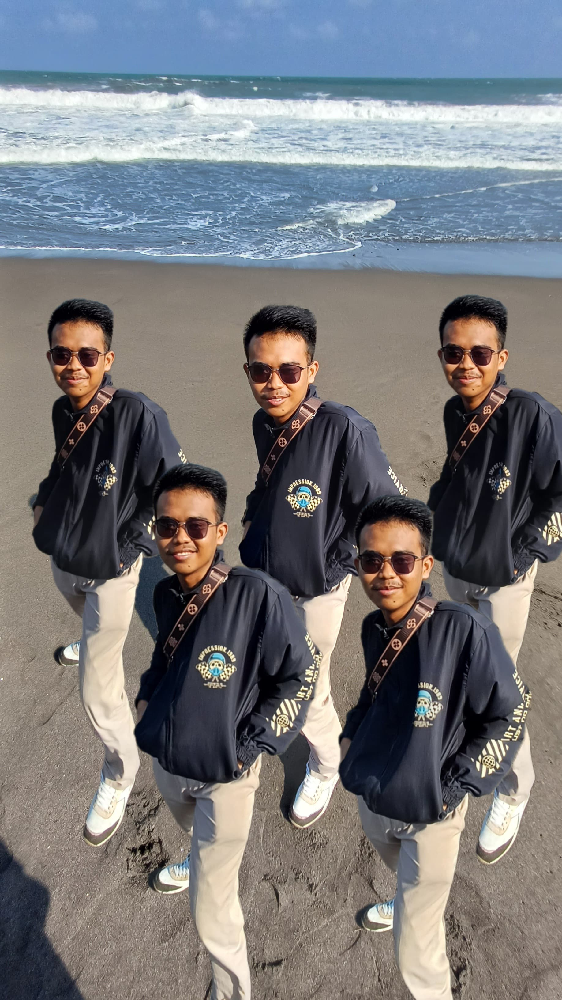

Welcome to My Personal!

Hello! My name is Muhammad Sufyan S., and I have a deep interest in technology and graphic design. I currently work at a laundry to cover my living expenses.
In addition to my work, I enjoy exploring new places and playing games in my spare time. I am passionate about continuously learning and improving my skills in both technology and design.
This website serves as a platform to share my interests, experiences, and projects. Feel free to explore and learn more about me!
If you have any questions or would like to connect, please visit the Contact page to get in touch.